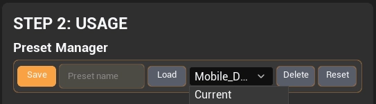

Installation
Engine Support & Required Plugins
Install UI Widget Builder in your Unreal project, confirm the supported engine version, and enable optional engine plugins before importing advanced widgets.
Unreal Engine compatibility
UI Widget Builder supports Unreal Engine 5.6, 5.7, and 5.8. Use the plugin build that matches your engine version.
| Engine version | Supported behavior |
|---|---|
| UE 5.6 | Supported. Widget switchers import as normal WidgetSwitcher widgets. |
| UE 5.7 | Supported. Common Animated Switcher can be used when the CommonUI plugin is enabled. |
| UE 5.8 | Supported. Common Animated Switcher can be used when the CommonUI plugin is enabled. |
Basic project installation
-
1
Copy the plugin. Place the
UIWidgetBuilderplugin folder inside your projectPlugins/directory. -
2
Open Unreal Engine. If Unreal asks to rebuild project modules, allow the rebuild.
-
3
Enable UI Widget Builder. Go to Edit → Plugins, search for UI Widget Builder, enable it, then restart the editor if requested.
-
4
Open the importer from the Tools menu. In Unreal, go to Tools → UI Widget Builder to launch the editor window, then select the exported PSD folder that contains
layout.jsonandTextures/.
After the plugin is enabled and Unreal is restarted, open the UI Widget Builder importer from the main editor menu: Tools → UI Widget Builder.
Animated Widget Switcher setup
The Change to Common Animated Switcher option requires Unreal Engine's CommonUI plugin. Enable CommonUI before importing if you want animated page transitions.
| Option | Required setup | Result |
|---|---|---|
| Normal WidgetSwitcher | No extra plugin required. | Works in UE 5.6, 5.7, and 5.8. |
| Common Animated Switcher | Enable CommonUI in Edit → Plugins, then restart Unreal. | Available for UE 5.7 and UE 5.8 imports that use the animated switcher option. |
| UE 5.6 | No animated switcher conversion is used. | The importer keeps normal WidgetSwitcher behavior. |
If CommonUI is not enabled, do not use the animated switcher option. Use the normal WidgetSwitcher import, or enable CommonUI and import again.
Saving the preset path
The importer can save the preset path, so users do not need to browse to the same preset location every time.

Save preset path
Use the preset path save option in the importer to remember the folder or file path used for UI Widget Builder presets.
Faster repeated imports
After saving the path, open the preset manager and load or save presets from the remembered location during future import sessions.
Saved usage presets are stored inside the project Saved folder: Saved/UIWidgetBuilder/UsagePresets.
Use the saved preset path when you want the same UI import presets available across repeated import sessions without browsing manually every time.